Overview
Models
| model | source |
|---|---|
| model | losartan_body_flat.xml |
Datasets
The experiment has no datasets.
Figures (15)

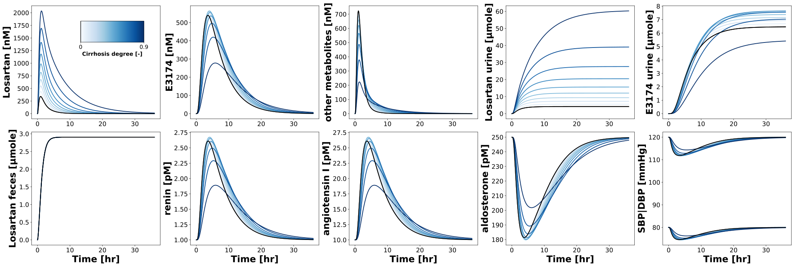

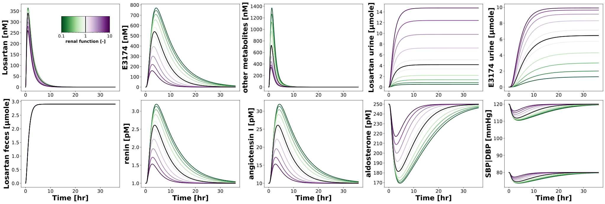

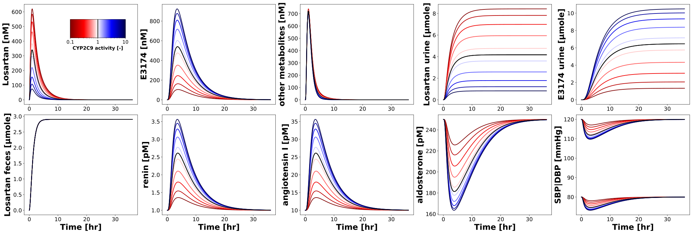

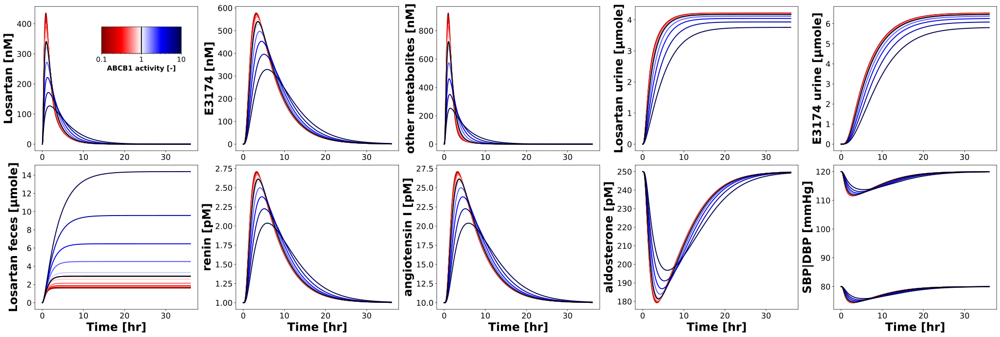

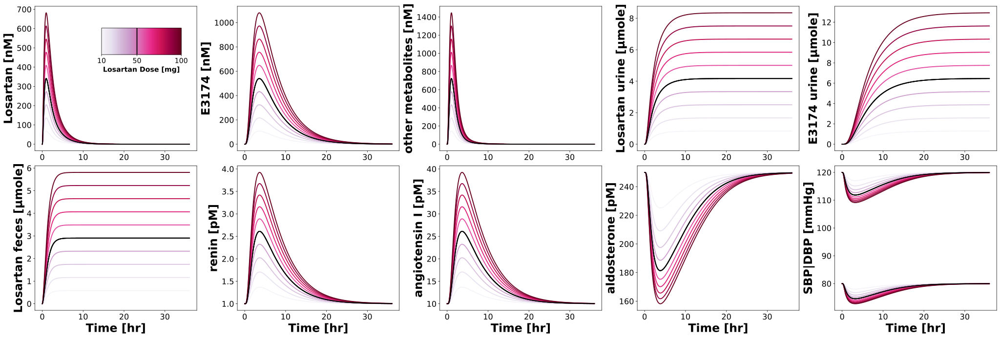

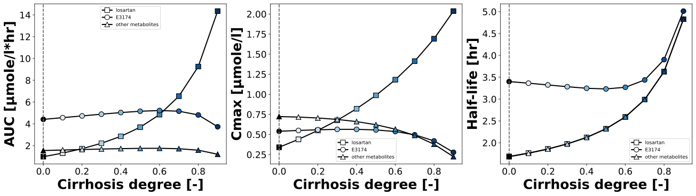

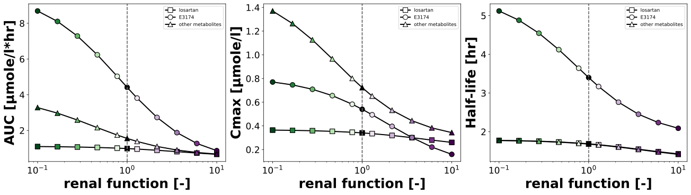

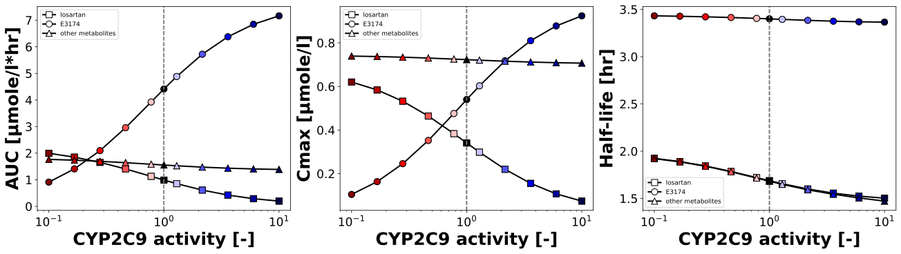

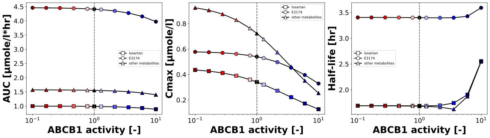

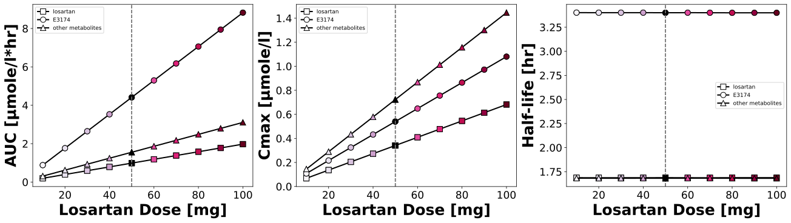

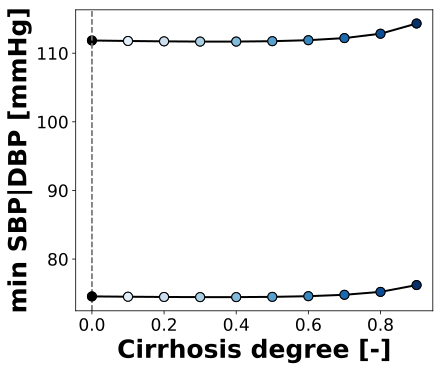

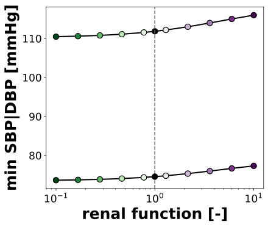

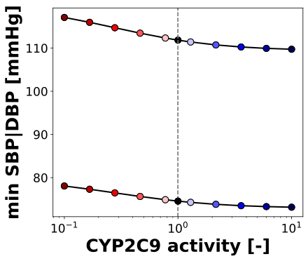

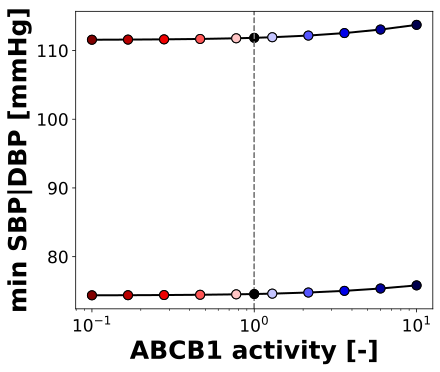

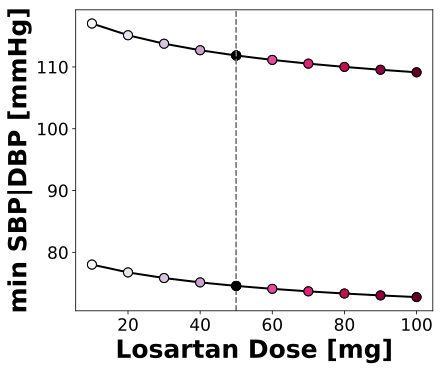
Code
"""Parameter scans of the losartan model."""
from typing import ClassVar, TypedDict, override
import matplotlib
import matplotlib.cm as cm
import matplotlib.pyplot as plt
import numpy as np
import pandas as pd
from matplotlib.axes import Axes
from matplotlib.typing import ColorType
from pkpdsim.scan import point_band, point_timecourse, scan_dimensions, start_values
from sbmlsim import Q
from sbmlsim.plot.serialization_matplotlib import FigureMPL
from sbmlsim.result import ScanResult
from sbmlsim.simulation import Dimension, Scan, Simulation
from sbmlsim.units import Quantity
from pkdb_models.models.losartan import MODEL
from pkdb_models.models.losartan.experiments.base_experiment import (
LosartanSimulationExperiment,
)
from pkdb_models.models.losartan.losartan_pk import SUBSTANCES, summarize
class ScanSpec(TypedDict):
"""Definition of a single parameter scan."""
parameter: str
default: float
range: np.ndarray
scale: str
colormap: str
units: str
label: str
class LosartanParameterScan(LosartanSimulationExperiment):
"""Scan the effect of parameters on pharmacokinetics and pharmacodynamics.
A single oral dose of 50 mg losartan, scanned are the degree of cirrhosis,
the renal function, the activities of CYP2C9 and ABCB1 and the dose.
In a run over the draws of the fitted parameters (`run_simulation
pkdb_models.models.losartan --uncertainty`) every point of a scan is
simulated for every draw; the figures draw the median of the draws with
the band of their quantiles.
"""
#: pharmacokinetic parameters of the scans by simulation key, set by
#: `figures_mpl`
pk_dfs: dict[str, pd.DataFrame]
#: pharmacodynamic parameters of the scans by simulation key and readout,
#: set by `figures_mpl`
pd_dfs: dict[str, dict[str, pd.DataFrame]]
font: ClassVar[dict[str, str | int]] = {"weight": "bold", "size": 25}
#: the opacity of the bands of the draws
band_alpha = 0.15
tick_font_size = 17
tend = 36 * 60
dose_los = 50 # [mg]
num_points = 10
scan_map: ClassVar[dict[str, ScanSpec]] = {
"hepatic_scan": {
"parameter": "f_cirrhosis",
"default": 0.0,
"range": np.linspace(0, 0.9, num=num_points),
"scale": "linear",
"colormap": "Blues",
"units": "dimensionless",
"label": "Cirrhosis degree [-]",
},
"renal_scan": {
"parameter": "KI__f_renal_function",
"default": 1.0,
"range": np.sort(
np.append(np.logspace(-1, 1, num=num_points), [1.0])
), # [10^-1=0.1, 10^1=10]
"scale": "log",
"colormap": "PRGn_r",
"units": "dimensionless",
"label": "renal function [-]",
},
"cyp2c9_scan": {
"parameter": "LI__f_cyp2c9",
"default": 1.0,
"range": np.sort(
np.append(np.logspace(-1, 1, num=num_points), [1.0])
), # [10^-1=0.1, 10^1=10]
"scale": "log",
"colormap": "seismic_r",
"units": "dimensionless",
"label": "CYP2C9 activity [-]",
},
"abcb1_scan": {
"parameter": "GU__f_abcb1",
"default": 1.0,
"range": np.sort(
np.append(np.logspace(-1, 1, num=num_points), [1.0])
), # [10^-1=0.1, 10^1=10]
"scale": "log",
"colormap": "seismic_r",
"units": "dimensionless",
"label": "ABCB1 activity [-]",
},
"dose_scan": {
"parameter": "PODOSE_los",
"default": 50,
"range": np.sort(
np.append(np.linspace(10, 100, num=num_points), [50])
), # [mg]
"scale": "linear",
"colormap": "PuRd",
"units": "mg",
"label": "Losartan Dose [mg]",
},
}
@override
def simulations(self) -> dict[str, Scan]:
tcscans = {}
for scan_key, scan_data in self.scan_map.items():
# the simulation does not set what the dimension scans (the dose
# of the dose scan), the dimension would replace it
preinit_changes = {
**self.default_changes(),
"PODOSE_los": Q(self.dose_los, "mg"),
}
preinit_changes.pop(scan_data["parameter"], None)
tcscans[f"scan_po_{scan_key}"] = Scan(
simulation=Simulation(
time_unit="min",
end=self.tend,
preinit_changes=preinit_changes,
),
dimensions=[
Dimension(
"dim_scan",
values={
scan_data["parameter"]: Q(
scan_data["range"], scan_data["units"]
)
},
),
],
)
return tcscans
@override
def figures_mpl(self) -> dict[str, FigureMPL]:
# calculate pharmacokinetic and pharmacodynamic parameters
self.pk_dfs = self.calculate_losartan_pk()
self.pd_dfs = self.calculate_losartan_pd()
return {
**self._figures_mpl_timecourses(),
**self._figures_mpl_pharmacokinetics(),
**self._figures_mpl_pharmacodynamics(),
}
def _across(self) -> str | None:
"""Get the dimension of the draws of the fitted parameters, `None` without."""
return None if self.uncertainty is None else self.uncertainty.id
def _scanned(self, res: ScanResult, parameter_id: str) -> Quantity:
"""Get the values of the scanned parameter at the points of the scan."""
values = start_values(res, parameter_id)
across = self._across()
if across is not None:
values = values.isel({across: 0})
return Q(values.values, res.units[parameter_id])
def _timecourse(
self, ax: Axes, res: ScanResult, sid: str, index: int, color: ColorType
) -> tuple[Quantity, Quantity]:
"""Get the timecourse of a point of the scan, drawing the band of its draws.
Returns:
The time and the values, the median of the draws in a run over
them, in the units of the figure.
"""
(scandim,) = scan_dimensions(res, self._across())
run = self.uncertainty
if run is None:
time, values = point_timecourse(res, sid, **{scandim: index})
else:
time, lower, values, upper = point_band(
res, sid, across=run.id, quantiles=run.quantiles, **{scandim: index}
)
t_vec = Q(time, res.units["time"]).to(self.units["time"])
c_vec = Q(values, res.units[sid]).to(self.units[sid])
if run is not None:
ax.fill_between(
t_vec.magnitude,
Q(lower, res.units[sid]).to(self.units[sid]).magnitude,
Q(upper, res.units[sid]).to(self.units[sid]).magnitude,
color=color,
alpha=self.band_alpha,
linewidth=0,
)
return t_vec, c_vec
def _summary(
self, df: pd.DataFrame, key: str, unit: str, target: str
) -> tuple[Quantity, Quantity | None, Quantity | None]:
"""Get a parameter at the points of the scan, the median and the band of the draws.
Returns:
The values (the median of the draws in a run over them), and the
lower and the upper quantile, `None` without draws.
"""
run = self.uncertainty
if run is None:
return Q(df[key].to_numpy(dtype=float), unit).to(target), None, None
summary = summarize(df, key, run.quantiles)
median, lower, upper = (
Q(summary[column].to_numpy(), unit).to(target)
for column in ["median", "lower", "upper"]
)
return median, lower, upper
@staticmethod
def _color_value(scan_data: ScanSpec, value: float) -> float:
"""Get the position of a value of a scan in the colormap of the scan."""
scan_range = scan_data["range"]
rmin, rmax = scan_range[0], scan_range[-1]
if scan_data["scale"] == "log":
return (np.log10(value) - np.log10(rmin)) / np.abs(
np.log10(rmax) - np.log10(rmin)
)
return (value - rmin) / np.abs(rmax - rmin)
def _figures_mpl_timecourses(self) -> dict[str, FigureMPL]:
"""Timecourses of the key variables of every scan."""
figures = {}
for scan_key, scan_data in self.scan_map.items():
scan_range = scan_data["range"]
rmin, rmax = scan_range[0], scan_range[-1]
cmap_str = scan_data["colormap"]
cmap = matplotlib.colormaps[cmap_str]
# -----------------------------------
# pharmacokinetics & pharmacodynamics
# -----------------------------------
sids = [
"[Cveplasma_los]",
"[Cveplasma_e3174]",
"[Cveplasma_l158]",
"Aurine_los",
"Aurine_e3174",
"Afeces_los",
"[ren]", # renin in Vplasma
"[ang1]", # angiotensin I in Vplasma
"[ald]", # aldosterone in Vplasma
"SBP",
"DBP",
]
f, axes = plt.subplots(
nrows=2,
ncols=5,
figsize=(6 * 5, 5 * 2),
dpi=300,
layout="constrained",
)
res = self.results[f"task_scan_po_{scan_key}"]
par_vec = self._scanned(res, scan_data["parameter"])
for ksid, sid in enumerate(sids):
# the diastolic blood pressure is in the panel of the systolic
kpanel = 9 if sid == "DBP" else ksid
ax = axes.flatten()[kpanel]
t_vec_default = None
c_vec_default = None
for k_par, par in enumerate(par_vec):
if np.isclose(scan_data["default"], par.magnitude):
color = "black"
else:
# red less function, blue more function
color = cmap(self._color_value(scan_data, par.magnitude))
t_vec, c_vec = self._timecourse(ax, res, sid, k_par, color)
if np.isclose(scan_data["default"], par.magnitude):
t_vec_default = t_vec
c_vec_default = c_vec
ax.plot(
t_vec.magnitude,
c_vec.magnitude,
color=color,
linewidth=2.0,
)
# plot the reference line in black
if t_vec_default is not None and c_vec_default is not None:
ax.plot(
t_vec_default.magnitude,
c_vec_default.magnitude,
color="black",
linewidth=2.0,
)
if kpanel > 4:
ax.set_xlabel(
f"{self.label_time} [{self.units['time']}]",
fontdict=self.font,
)
ylabel = "SBP|DBP" if kpanel == 9 else self.labels[sid]
ax.set_ylabel(
f"{ylabel} [{self.units[sid]}]",
fontdict=self.font,
)
ax.tick_params(axis="x", labelsize=self.tick_font_size)
ax.tick_params(axis="y", labelsize=self.tick_font_size)
# --- colorbar ---
# 4-tuple of floats rect = (left, bottom, width, height).
# A new Axes is added with dimensions rect in normalized (0, 1)
cb_ax = f.add_axes(rect=(0.10, 0.85, 0.08, 0.08))
cb_ax.set_in_layout(True)
# colorbar range
if scan_data["scale"] == "log":
norm = matplotlib.colors.LogNorm(vmin=rmin, vmax=rmax, clip=False)
else:
norm = matplotlib.colors.Normalize(vmin=rmin, vmax=rmax, clip=False)
cbar = f.colorbar(
cm.ScalarMappable(norm=norm, cmap=cmap_str),
cax=cb_ax,
orientation="horizontal",
)
# the gradient as vector cells: matplotlib rasterizes it into an
# embedded image, which some SVG viewers do not show; the edges of
# the cells in their color close the seams between them
if cbar.solids is not None:
cbar.solids.set_rasterized(False)
cbar.solids.set_edgecolor("face")
# ticks
ticks = [float(rmin), float(rmax)]
if scan_data["default"] not in ticks:
ticks.append(scan_data["default"])
ticks = sorted(ticks)
cbar.set_ticks(ticks)
# the weight normal: DejaVu Sans has no medium weight, matplotlib warns
cbar.set_ticklabels(
[f"{t:g}" for t in ticks], fontsize=15, fontweight="normal"
)
cbar.ax.set_xlabel(scan_data["label"], fontsize=15, fontweight="bold")
cbar.ax.axvline(x=scan_data["default"], color="black", linewidth=2)
figures[f"timecourse__pk__{scan_key}"] = f
return figures
def _figures_mpl_pharmacokinetics(self) -> dict[str, FigureMPL]:
"""Visualize dependency of pharmacokinetics parameters."""
figures = {}
parameters_info = {
"los": [
"auc_inf_obs",
"cmax",
"thalf",
],
"e3174": [
"auc_inf_obs",
"cmax",
"thalf",
],
"l158": [
"auc_inf_obs",
"cmax",
"thalf",
],
}
colors = {
"los": "black",
"e3174": "black",
"l158": "black",
}
markers = {
"los": "s",
"e3174": "o",
"l158": "^",
}
for scan_key, scan_data in self.scan_map.items():
ncols = len(parameters_info["los"])
cmap = matplotlib.colormaps[scan_data["colormap"]]
f, axes = plt.subplots(
nrows=1,
ncols=ncols,
figsize=(6 * ncols, 5),
dpi=300,
layout="constrained",
)
axes = axes.flatten()
sim_key = f"scan_po_{scan_key}"
res = self.results[f"task_{sim_key}"]
# the scanned parameter
x = self._scanned(res, scan_data["parameter"])
for substance, parameters in parameters_info.items():
df = self.pk_dfs[sim_key]
df = df[df["substance"] == substance] # get PK for substance
for k, pk_key in enumerate(parameters):
ax = axes[k]
ax.axvline(x=scan_data["default"], color="grey", linestyle="--")
y, y_lower, y_upper = self._summary(
df,
pk_key,
df[f"{pk_key}_unit"].iloc[0],
self.pk_units[pk_key],
)
if y_lower is not None and y_upper is not None:
ax.fill_between(
x.magnitude,
y_lower.magnitude,
y_upper.magnitude,
color=colors[substance],
alpha=self.band_alpha,
linewidth=0,
)
ax.plot(
x.magnitude,
y.magnitude,
marker=markers[substance],
linestyle="-",
linewidth=2.0,
color=colors[substance],
markeredgecolor=colors[substance],
markeredgewidth=1.0,
markerfacecolor="white",
markersize=9,
label=SUBSTANCES[substance],
)
# individual points
for kx, par in enumerate(x.magnitude):
if np.isclose(scan_data["default"], par):
color = "black"
else:
color = cmap(self._color_value(scan_data, par))
ax.plot(
x.magnitude[kx],
y.magnitude[kx],
marker=markers[substance],
linestyle=None,
markeredgecolor="black",
markeredgewidth=1.0,
markerfacecolor=color,
markersize=9,
label="__nolabel__",
)
ax.set_xlabel(
scan_data["label"],
fontdict=self.font,
)
ax.set_ylabel(
f"{self.pk_labels[pk_key]} [{self.pk_units[pk_key]}]",
fontdict=self.font,
)
ax.tick_params(axis="x", labelsize=self.tick_font_size)
ax.tick_params(axis="y", labelsize=self.tick_font_size)
ax.set_xscale("log" if scan_data["scale"] == "log" else "linear")
ax.legend(fontsize=self.legend_font_size)
figures[f"pk_{scan_key}"] = f
return figures
def _figures_mpl_pharmacodynamics(self) -> dict[str, FigureMPL]:
"""Visualize dependency of pharmacodynamic parameters."""
figures = {}
# the minimum of the systolic and diastolic blood pressure, in one panel
parameters = {
"SBP": "min",
"DBP": "min",
}
for scan_key, scan_data in self.scan_map.items():
cmap = matplotlib.colormaps[scan_data["colormap"]]
f, ax = plt.subplots(
nrows=1, ncols=1, figsize=(6 * 1, 5), dpi=300, layout="constrained"
)
sim_key = f"scan_po_{scan_key}"
res = self.results[f"task_{sim_key}"]
dfs = self.pd_dfs[sim_key]
# the scanned parameter
x = self._scanned(res, scan_data["parameter"])
for sid, pd_key in parameters.items():
ax.axvline(x=scan_data["default"], color="grey", linestyle="--")
df = dfs[sid] # get PD for sid
y, y_lower, y_upper = self._summary(
df, pd_key, df["unit"].iloc[0], self.units[sid]
)
if y_lower is not None and y_upper is not None:
ax.fill_between(
x.magnitude,
y_lower.magnitude,
y_upper.magnitude,
color="black",
alpha=self.band_alpha,
linewidth=0,
)
ax.plot(
x.magnitude,
y.magnitude,
marker="o",
linestyle="-",
linewidth=2.0,
color="black",
markeredgecolor="black",
markeredgewidth=1.0,
markerfacecolor="white",
markersize=9,
)
# individual points
for kx, par in enumerate(x.magnitude):
if np.isclose(scan_data["default"], par):
color = "black"
else:
color = cmap(self._color_value(scan_data, par))
ax.plot(
x.magnitude[kx],
y.magnitude[kx],
marker="o",
linestyle=None,
markeredgecolor="black",
markeredgewidth=1.0,
markerfacecolor=color,
markersize=9,
label="__nolabel__",
)
ax.set_xlabel(
scan_data["label"],
fontdict=self.font,
)
ax.set_ylabel(
f"{pd_key} SBP|DBP [{self.units[sid]}]",
fontdict=self.font,
)
ax.tick_params(axis="x", labelsize=self.tick_font_size)
ax.tick_params(axis="y", labelsize=self.tick_font_size)
ax.set_xscale("log" if scan_data["scale"] == "log" else "linear")
figures[f"pd_{scan_key}"] = f
return figures
if __name__ == "__main__":
MODEL.run_experiments(
LosartanParameterScan, output_dir=LosartanParameterScan.__name__
)